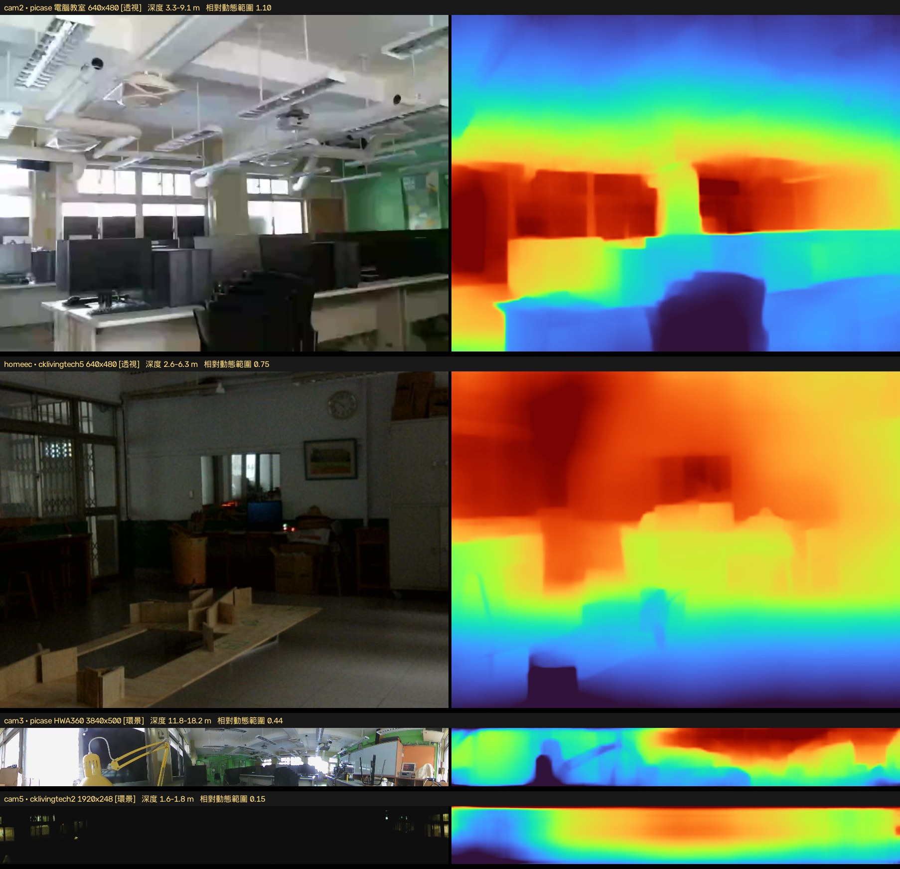

四台校園攝影機的 YOLO26-depth 可行性實測
為什麼環景條測不準、透視鏡頭卻可以
承生科教室四人流定位：那台 cam5 的環景深度一直是「柔和平場」，逐人距離的鑑別度幾乎全來自方位角。這裡把校內其餘攝影機都拉進來實測，找出問題出在鏡頭型式、不是模型。
一、受測的四台攝影機
三台 Raspberry Pi 上的四路錄影，直接從各機遠端抽幀（各機都有 ffmpeg，只回傳 JPEG，不搬整支影片）：
| 代號 | 主機 | 解析度 | 鏡頭型式 | 場域 |
|---|---|---|---|---|
| cam2 | picase | 640×480 | 透視 | 電腦教室 |
| homeec | cklivingtech5 | 640×480 MJPEG | 透視 | 家政/生科 |
| cam3 | picase（HWA360） | 3840×500 | 環景條 | 電腦教室 |
| cam5 | cklivingtech2（j5create 360） | 1920×248 | 環景條 | 生科教室四 |
抽幀時踩到的坑：最新的那支錄影檔一定失敗（
moov atom not found）——還在錄的 mp4 尚未寫入 moov atom。要取倒數第 3～4 支已完成的檔。二、量化指標：深度的「相對動態範圍」
單看深度值域會被場景大小混淆，所以用 (p98 − p2) ÷ 中位數：柔和平場 → 接近 0；有真實前後景結構 → 明顯較大。
| 攝影機 | 鏡頭 | 深度值域 | 相對動態範圍 | 空間梯度 |
|---|---|---|---|---|
| cam2 電腦教室 | 透視 | 3.3–9.1 m | 1.102 | 0.0249 |
| homeec | 透視 | 2.6–6.3 m | 0.750 | 0.0102 |
| cam3 HWA360 | 環景條 | 11.8–18.2 m | 0.441 | 0.0113 |
| cam5 生科四 | 環景條 | 1.6–1.8 m | 0.155 | 0.0013 |

三、結論：問題在鏡頭型式，不在模型
透視鏡頭的相對動態範圍是 cam5 環景條的 5–7 倍。YOLO26-depth 是用透視影像訓練的；等距柱狀／環帶去扭曲的影像在幾何上與訓練分布不符，模型只能吐出柔和距離場。
- cam2 / homeec（透視）：可以直接用，不需要生科四那套 D_wall 幾何校正。
- cam3（3840×500 環景）：介於中間（0.441）。同為環景但比 cam5 好，合理推測是解析度高得多，縮放進 640 網格後保留較多結構。
- cam5（1920×248 環景）：最差，且偵測要切塊才抓得到東西。
另一個實測差異：偵測在透視鏡頭上整張直接跑就有結果（homeec 抓到 clock/tv）；環景條整張跑一律 0，cam3 切 5 塊後才抓到 chair / potted plant。與先前 cam5 的結論一致。
四、對後續人流定位的意義
- 要做可信的逐人絕對距離，優先用透視鏡頭那兩台，而不是繼續在環景條上補救。
- 生科四若要留在環景，逐人徑向就得靠幾何（腳點俯角）而非深度模型——但那需要腳在畫面內，前一頁已實測三位學生的腳都被畫面底邊截斷。
- cam3 的高解析環景值得單獨再試：它同時具備 360° 覆蓋與尚可的深度結構。
五、順帶發現的維運問題
picase 系統碟 100% 滿（0 bytes 可用，117G 已用 112G）——cam3 的
recordings3 就佔 97G。實測時只能把暫存檔寫到 /dev/shm。這會讓新的錄影寫入失敗，建議優先處理（設備清單的自動巡檢也已標為最高優先項）。
相關：總覽 · 生科教室四人流定位（含閉合對位）｜ 模型：Ultralytics YOLO26 ／ yolo26n-depth｜
影像為暑假期間空教室，已用 conf=0.10 低門檻逐張稽核確認無人物入鏡；推論程式碼與攝影機存取憑證均未公開。